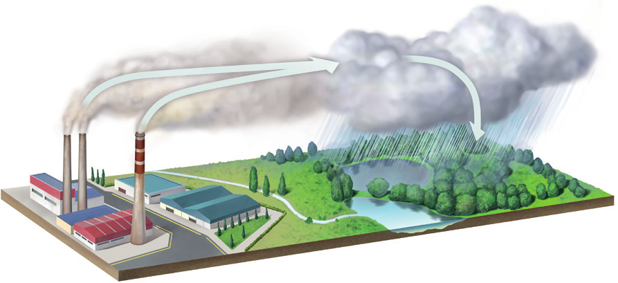
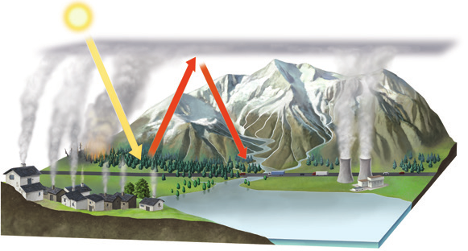

3. Contaminación de la atmósfera
Practicar y avanzar 24-33
La contaminación atmosférica es la presencia en la atmósfera de sustancias o energía que ocasionan efectos nocivos para los seres vivos. Puede ser de origen natural o artificial.
- La contaminación atmosférica es de origen natural cuando las emisiones contaminantes proceden de erupciones volcánicas, incendios forestales o tormentas.
- La contaminación atmosférica es de origen artificial cuando es consecuencia de las acciones humanas, como lo resulta por el uso de combustibles fósiles.
3.1 Problemas ambientales derivados de la contaminación
Los contaminantes se dispersan por el viento y causan problemas ambientales cuyas consecuencias afectan a todo el planeta. Es el caso de la lluvia ácida, la disminución del espesor de la capa de ozono y el aumento del efecto invernadero.
Lluvia ácida
La lluvia ácida es la precipitación atmosférica de agua, nieve, granizo o polvo con elevadas concentraciones de ácido nítrico y ácido sulfúrico.

Proceso de formación de la lluvia ácida
- Las industrias emiten óxidos de azufre y de nitrógeno a la atmósfera. El viento dispersa estos gases hasta lugares alejados del foco de emisión.
- Los óxidos de azufre y de nitrógeno se combinan con el vapor de agua atmosférico, formando ácido sulfúrico y ácido nítrico.
- La caída al suelo de estos ácidos con las precipitaciones hace que se extingan la flora y la fauna de los bosques y de los lagos de las zonas afectadas.
